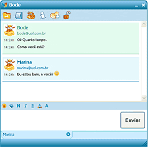
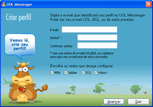
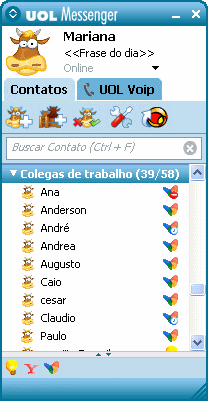

Como funciona
O UOL Messenger é um comunicador instantâneo que permite a você conversar com seus amigos do MSN Messenger, ICQ, Yahoo Messenger e Jabber usando um único programa. Use o UOL Messenger e descubra as vantagens.

Segurança e privacidade
Com a exclusiva funcionalidade "Conversa segura", você garante a privacidade e a segurança das mensagens trocadas com seus contatos que também usam o UOL Messenger. Toda a conversa é codificada, protegendo seu conteúdo e prevenindo que outras pessoas consigam ler suas mensagens.
Com o UOL Messenger, o recebimento de arquivos e mensagens também ficou mais seguro. Você pode escolher, na tela de Preferências, se as pessoas que não estão na sua lista poderão ou não lhe enviar mensagens e arquivos.
Você também pode aumentar a sua privacidade, bloqueando aquelas pessoas indesejadas, através da opção "Lista de permissões" da tela de Preferências. De maneira fácil, você controla quem será bloqueado, independente da conta cadastrada.

Fácil de usar
O Assistente de criação de perfil facilitará a configuração do seu novo comunicador instantâneo. Durante o processo, você cadastrará sua conta do UOL, além de poder incluir as contas dos demais comunicadores instantâneos que você utiliza (MSN, ICQ, Yahoo Messenger e Jabber). Ainda é possível escolher o apelido e a foto que serão usados em todas as contas e definir a melhor configuração para o seu comunicador instantâneo.

Interface simples e sem propagandas
A interface do UOL Messenger é muito simples e não tem propagandas e informações que não são de seu interesse. É fácil achar seus amigos e organizá-los em grupos.
A janela de mensagens também é simples e intuitiva. Você pode organizar as conversas através de abas, acabando com a bagunça de janelas na sua área de trabalho.
Multiprotocolo
O UOL Messenger permite reunir todos os seus contatos do MSN, ICQ, Yahoo e Jabber em um único programa. É simples, basta cadastrar todas as suas contas da rede dos outros comunicadores (MSN Messenger, ICQ, Yahoo Messenger e Jabber).